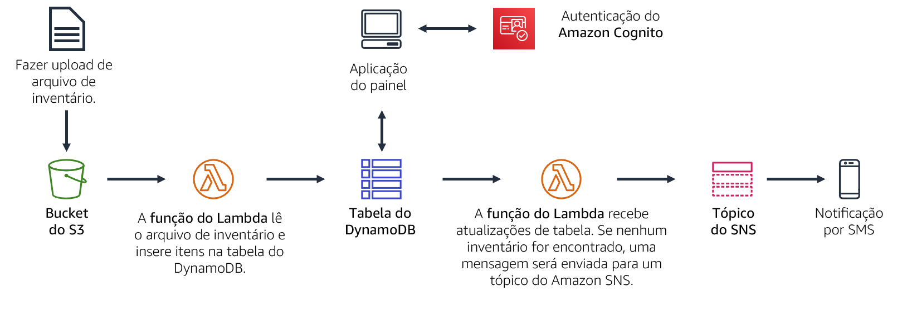
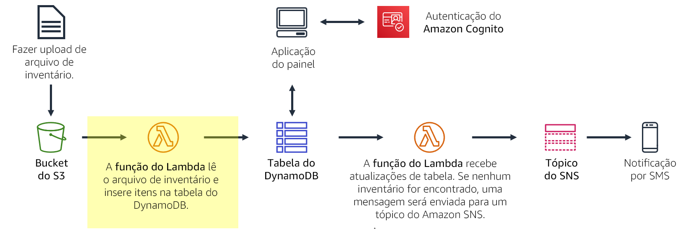
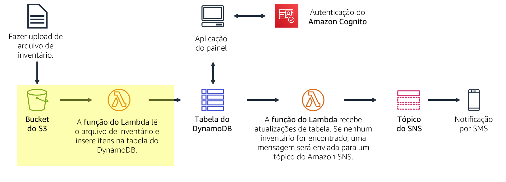
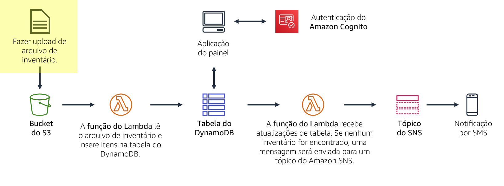
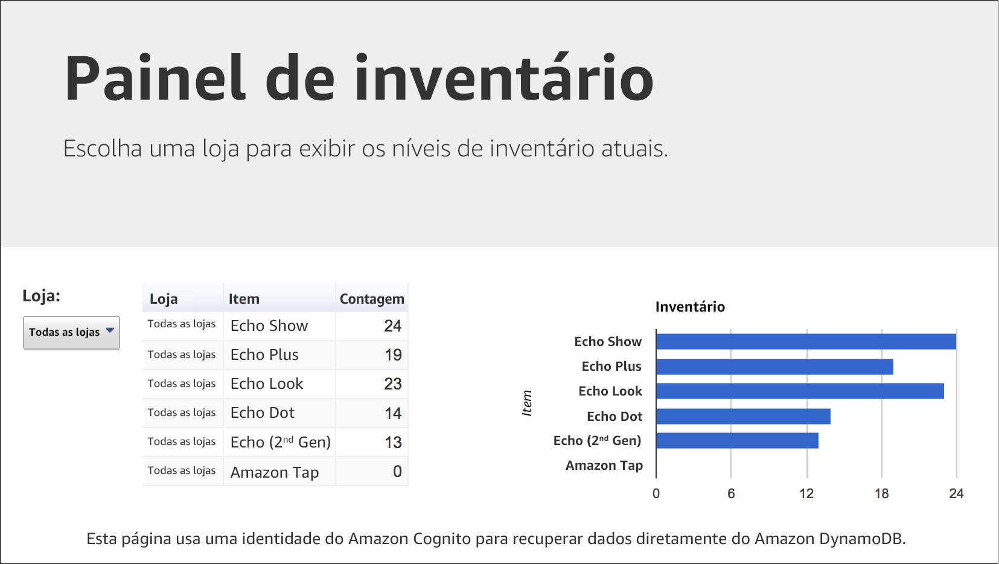
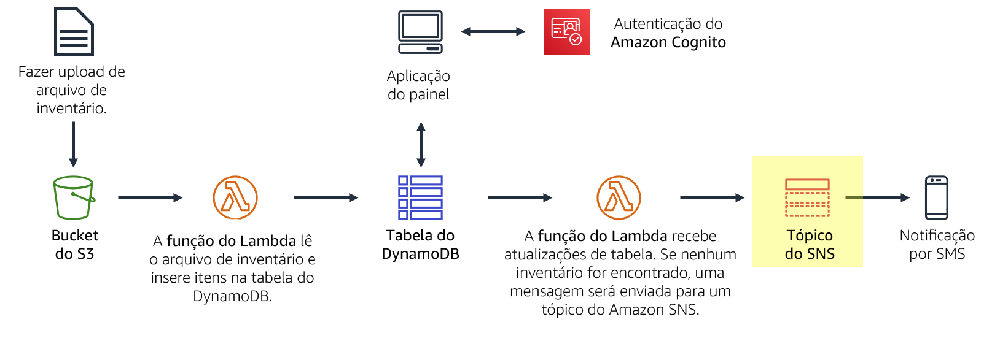
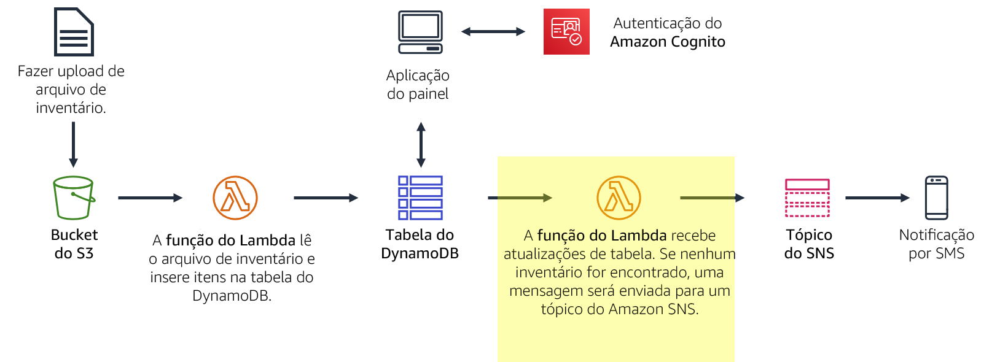

Você está criando um sistema de rastreamento de inventário. Lojas de todo o mundo carregarão um arquivo de inventário para o Amazon S3. Sua equipe quer ser capaz de visualizar os níveis de inventário e enviar uma notificação quando os níveis de inventário são baixos.
Neste laboratório, você:
Tradicionalmente, os aplicações são executados em servidores. Esses servidores podem ser físicos (ou bare metal). Eles também podem ser ambientes virtuais que são executados em cima de servidores físicos. No entanto, você deve comprar e provisionar todos esses tipos de servidores, e você também deve gerenciar sua capacidade. Em contraste, você pode executar seu código no AWS Lambda sem precisar pré-alocar servidores. Com o Lambda, você só precisa fornecer o código e definir um gatilho. A função Lambda pode ser executada quando for necessária, seja uma vez por semana ou centenas de vezes por segundo. Você só paga pelo que usa.
Este laboratório demonstra como acionar uma função do Lambda quando um arquivo é carregado no Amazon Simple Storage Service (Amazon S3). O arquivo será carregado em uma tabela do Amazon DynamoDB. Os dados estarão disponíveis para você visualizar em uma página do painel que recupera os dados diretamente do DynamoDB. Essa solução não usa o Amazon Elastic Compute Cloud (Amazon EC2). É uma solução sem servidor que escala automaticamente quando é usada. Também incorre pouco custo quando está em uso. Quando está ocioso, praticamente não há nenhum custo porque você só será cobrado pelo armazenamento de dados.
Depois de concluir este laboratório, você deverá ser capaz de:
No final deste laboratório, sua arquitetura será semelhante ao seguinte exemplo:

O laboratório levará aproximadamente 40 minutos para ser concluído.
Neste ambiente de laboratório, o acesso aos serviços e ações de serviço da AWS pode estar restrito àqueles necessários para concluir as instruções do laboratório. Você poderá encontrar erros se tentar acessar outros serviços ou executar ações além do que está descrito neste laboratório.
Na parte superior destas instruções, escolha Start Lab (Iniciar laboratório) para iniciar o laboratório.
Um painel Start Lab (Iniciar laboratório) é aberto com o status do laboratório.
Dica: se você precisar de mais tempo para concluir o laboratório, escolha novamente o botão Start Lab (Iniciar laboratório) para reiniciar o cronômetro do ambiente.
Aguarde até que o painel Start Lab (Iniciar laboratório) exiba a mensagem Lab status: ready (Status do laboratório: pronto) e, em seguida, escolha X para fechar o painel.
Na parte superior destas instruções, escolha AWS.
Essa ação abrirá o Console de Gerenciamento da AWS em uma nova guia do navegador. O sistema fará seu login automaticamente.
Dica: se uma nova guia do navegador não for aberta, normalmente você verá uma faixa ou um ícone na parte superior do navegador com uma mensagem informando que o navegador está impedindo que o site abra janelas pop-up. Escolha a faixa ou o ícone e depois Allow pop ups (Permitir pop-ups).
Organize a guia do Console de Gerenciamento da AWS para que ela seja exibida com essas instruções. O ideal é ver as duas guias do navegador abertas ao mesmo tempo, para facilitar o acompanhamento das etapas do laboratório.
Não altere a região, a menos que seja especificamente instruído a fazer isso.
Nesta tarefa, você criará uma função do Lambda que processará um arquivo de inventário. A função do Lambda lerá o arquivo e inserirá informações em uma tabela do DynamoDB.

No Console de Gerenciamento da AWS, no menu Services (Serviços), escolha Lambda.
Escolha Create function (Criar função)
Os esquemas são modelos de código para escrever funções do Lambda. Os esquemas são fornecidos como triggers padrão do Lambda, como a criação de habilidades do Alexa e o processamento de streamings do Amazon Kinesis Data Firehose. Este laboratório oferece uma função pré-pronta do Lambda, então você irá Author from scratch (Começar do zero).
Defina as seguintes configurações:
Load-InventoryEssa função dá à função do Lambda permissões para que ela possa acessar o Amazon S3 e o DynamoDB.
Escolha Create function (Criar função)
Role para baixo até a seção Código de função e, em seguida, no editor de código, exclua todo o código.
No Editor de código de função, copie o seguinte código:
# Load-Inventory Lambda function## This function is triggered by an object being created in an Amazon S3 bucket.# The file is downloaded and each line is inserted into a DynamoDB table.import json, urllib, boto3, csv# Connect to S3 and DynamoDBs3 = boto3.resource('s3')dynamodb = boto3.resource('dynamodb')# Connect to the DynamoDB tablesinventoryTable = dynamodb.Table('Inventory');# This handler is run every time the Lambda function is triggereddef lambda_handler(event, context): # Show the incoming event in the debug log print("Event received by Lambda function: " + json.dumps(event, indent=2)) # Get the bucket and object key from the Event bucket = event['Records'][0]['s3']['bucket']['name'] key = urllib.parse.unquote_plus(event['Records'][0]['s3']['object']['key']) localFilename = '/tmp/inventory.txt' # Download the file from S3 to the local filesystem try: s3.meta.client.download_file(bucket, key, localFilename) except Exception as e: print(e) print('Error getting object {} from bucket {}. Make sure they exist and your bucket is in the same region as this function.'.format(key, bucket)) raise e # Read the Inventory CSV file with open(localFilename) as csvfile: reader = csv.DictReader(csvfile, delimiter=',') # Read each row in the file rowCount = 0 for row in reader: rowCount += 1 # Show the row in the debug log print(row['store'], row['item'], row['count']) try: # Insert Store, Item and Count into the Inventory table inventoryTable.put_item( Item={ 'Store': row['store'], 'Item': row['item'], 'Count': int(row['count'])}) except Exception as e: print(e) print("Unable to insert data into DynamoDB table".format(e)) # Finished! return "%d counts inserted" % rowCountExamine o código. Ele executa as seguintes etapas:
Em seguida, você vai configurar o Amazon S3 para acionar a função do Lambda quando um arquivo for carregado.
Lojas de todo o mundo fornecem arquivos de inventário para carregar no sistema de rastreamento de inventário. Em vez de fazer upload de seus arquivos via FTP, as lojas podem enviá-los diretamente para o Amazon S3. Eles podem fazer upload dos arquivos através de uma página da Web, um script ou como parte de um programa. Quando um arquivo é recebido, ele aciona a função do Lambda. Essa função do Lambda carregará o inventário em uma tabela do DynamoDB.

Nesta tarefa, você cria um bucket do Amazon S3 e o configura para acionar a função do Lambda.
Cada bucket deve ter um nome exclusivo, então você adicionará um número aleatório ao nome do bucket. Por exemplo: inventory-123
inventory-<número> (Substitua Você pode receber um erro que indica: O nome do bucket solicitado não está disponível. Se você receber esse erro, escolha o primeiro link Editar, altere o nome do bucket e tente novamente até que o nome do bucket seja aceito.
Agora, configure o bucket para acionar automaticamente a função do Lambda sempre que um arquivo for enviado por upload.
Escolha o nome do bucket do seu inventory-
Escolha a guia Properties (Propriedades).
Role para baixo até Advanced settings (Configurações avançadas) e clique em Events (Eventos).
Você vai configurar um evento para ser acionado quando um objeto for criado no bucket do S3.
Clique em Adicionar notificação e configure estes ajustes:
Load-InventoryQuando um objeto é criado no bucket, essa configuração informa o Amazon S3 para acionar a função Load-Inventory Lambda criada anteriormente.
Seu bucket agora está pronto para receber arquivos de inventário.
Agora você está pronto para testar o processo de carregamento. Você enviará um arquivo de inventário e, em seguida, verifique se ele foi carregado com sucesso.

Faça download dos arquivos de inventário abrindo o menu de contexto (clique com o botão direito do mouse) para estes links:
Esses arquivos são os arquivos de inventário que você pode usar para testar o sistema. Eles são arquivos de valores separados por vírgulas (CSV). O exemplo a seguir mostra o conteúdo do arquivo de Berlim:
store,item,count Berlin,Echo Dot,12 Berlin,Echo (2nd Gen),19 Berlin,Echo Show,18 Berlin,Echo Plus,0 Berlin,Echo Look,10 Berlin,Amazon Tap,15O Amazon S3 acionará automaticamente a função do Lambda, que carregará os dados em uma tabela do DynamoDB.
Uma aplicação de painel sem servidor foi fornecida para que você visualize os resultados.
O aplicação do painel abrirá e exibirá os dados de inventário que você carregou no bucket. Os dados são recuperados do DynamoDB, o que prova que o upload acionou com êxito a função Lambda.

Se o aplicação do painel não exibir nenhuma informação, peça ao instrutor para ajudá-lo a diagnosticar o problema.
O aplicação de painel é servido como uma página da Web estática do Amazon S3. O painel é autenticado por meio do Amazon Cognito como um usuário anônimo, que fornece permissões suficientes para que o painel recupere dados do DynamoDB.
Você também pode visualizar os dados diretamente na tabela do DynamoDB.
Os dados do arquivo de inventário serão exibidos. Ele mostra a contagem de loja, item e inventário.
Você deseja notificar a equipe de gerenciamento de inventário quando uma loja ficar sem estoque para um item. Para esta funcionalidade de notificação sem servidor, você usará o Amazon SNS.

O Amazon SNS é um serviço flexível e totalmente gerenciado de mensagens de publicação/assinatura e notificações móveis. Ele entrega mensagens aos endpoints e clientes de inscrição. Com o Amazon SNS, você pode distribuir mensagens para um grande número de assinantes, incluindo sistemas e serviços distribuídos e dispositivos móveis.
No menu Services (Serviços), escolha Simple Notification Service (Serviço simples de notificação).
Na caixa Create topic (Criar tópico), para Topic name (Nome do tópico), digite NoStock
Escolha Next step (Próxima etapa)
Role até a parte inferior da página.
Escolha Create topic (Criar tópico)
Para receber notificações, você deve se inscrever* no tópico. Você pode optar por receber notificações através de vários métodos, como SMS e e-mail.
Na metade inferior da página, escolha Criar assinatura e defina estas configurações:
Se você não quiser receber uma mensagem SMS, você pode se inscrever por e-mail. Você deve fornecer um endereço de e-mail que você pode acessar enquanto trabalha neste laboratório. Depois de criar uma assinatura de e-mail, você receberá uma mensagem de e-mail de confirmação. Abra a mensagem e escolha o link Confirmar assinatura.
Qualquer mensagem enviada para o tópico do SNS será encaminhada para você por SMS ou e-mail.
Você pode modificar a função Load-Inventory Lambda existente para verificar os níveis de inventário enquanto o arquivo está sendo carregado. No entanto, esta configuração não é uma boa prática arquitetônica. Em vez de sobrecarregar a função Load-Inventory com a lógica de negócios, você criará outra função do Lambda que é acionada quando os dados são carregados na tabela do DynamoDB. Essa função será acionada por um stream do DynamoDB.
Esta abordagem arquitetônica oferece vários benefícios:
Nesta tarefa, você criará outra função do Lambda que examina o inventário enquanto ele é carregado na tabela do DynamoDB. Se a função do Lambda perceber que um item está fora de estoque, ele enviará uma notificação por meio do tópico SNS que você criou anteriormente.

Nome da função: Check-Stock
Runtime (Ambiente de execução): Python 3.7
Expanda Choose or create an execution role (Escolher ou criar uma função de execução).
Execution role (Função de execução): Use an existing role (Usar uma função existente)
Existing role (Função existente): Lambda-Check-Stock-Role
Escolha Create function (Criar função)
Essa função foi configurada com permissões para enviar uma notificação ao Amazon SNS.
Role para baixo até a seção Function code (Código de função) e, em seguida, no editor de código, exclua todo o código.
Copie o código a seguir e, no editor Function code (Código de função), cole o código copiado:
# Stock Check Lambda function## This function is triggered when values are inserted into the Inventory DynamoDB table.# Inventory counts are checked and if an item is out of stock, a notification is sent to an SNS Topic.import json, boto3# This handler is run every time the Lambda function is triggereddef lambda_handler(event, context): # Show the incoming event in the debug log print("Event received by Lambda function: " + json.dumps(event, indent=2)) # For each inventory item added, check if the count is zero for record in event['Records']: newImage = record['dynamodb'].get('NewImage', None) if newImage: count = int(record['dynamodb']['NewImage']['Count']['N']) if count == 0: store = record['dynamodb']['NewImage']['Store']['S'] item = record['dynamodb']['NewImage']['Item']['S'] # Construct message to be sent message = store + ' is out of stock of ' + item print(message) # Connect to SNS sns = boto3.client('sns') alertTopic = 'NoStock' snsTopicArn = [t['TopicArn'] for t in sns.list_topics()['Topics'] if t['TopicArn'].lower().endswith(':' + alertTopic.lower())][0] # Send message to SNS sns.publish( TopicArn=snsTopicArn, Message=message, Subject='Inventory Alert!', MessageStructure='raw' ) # Finished! return 'Successfully processed {} records.'.format(len(event['Records']))Examine o código. Ele executa as seguintes etapas:
Agora você configurará a função para que ela seja acionada quando os dados forem adicionados à tabela Inventory no DynamoDB.
Role até a seção Designer na parte superior da página.
Escolha Add trigger (Adicionar trigger) e defina estas configurações:
Agora, você está pronto para testar o sistema.
Agora você fará o upload de um arquivo de inventário para o Amazon S3, que acionará a função Load-Inventory original. Essa função carregará dados no DynamoDB, que acionará a nova função Check-Stock Lambda. Se a função do Lambda detectar um item com inventário zero, ela enviará uma mensagem para o Amazon SNS. Em seguida, o Amazon SNS notificará você por SMS ou e-mail.
Agora você deve ser capaz de usar o menu suspenso Store (Armazenamento) para visualizar o inventário de ambas as lojas.
Além disso, você deve receber uma notificação por SMS ou e-mail de que a loja tem um item fora de estoque (cada arquivo de inventário tem um item que está fora de estoque).
Se você não recebeu uma notificação, aguarde alguns minutos e carregue um arquivo de inventário diferente. Às vezes, o acionador do DynamoDB pode levar alguns minutos para habilitar.
Dica: você pode enviar seu trabalho várias vezes. Depois de alterar o trabalho, escolha Submit (Enviar) novamente. Seu último envio é o que será gravado para este laboratório.
Parabéns! Você concluiu o laboratório.
Um painel indica que DELETE has been initiated... You may close this message box now (A EXCLUSÃO foi iniciada... Você pode fechar esta caixa de mensagem agora).
©2020, Amazon Web Services, Inc. e suas afiliadas. Todos os direitos reservados. Este trabalho não pode ser reproduzido ou redistribuído, no todo ou em parte, sem permissão prévia por escrito da Amazon Web Services, Inc. É proibido copiar, emprestar ou vender para fins comerciais.